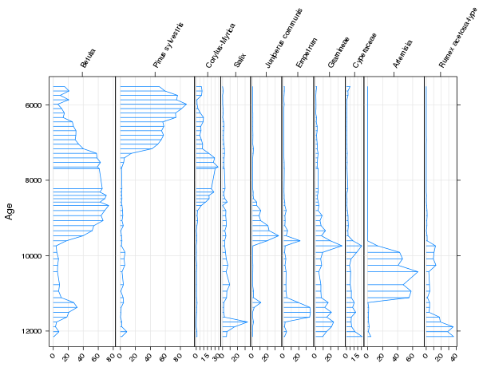
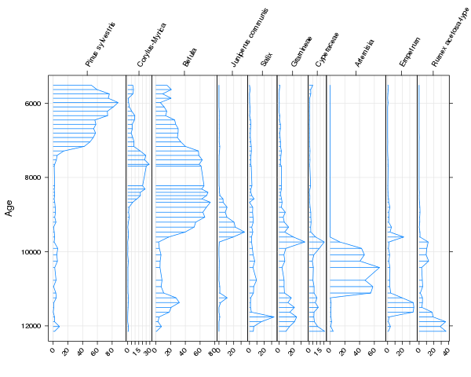

Stratigraphic diagrams using analogue
One of the routine tasks palaeoecologists do is plot data on species composition or geochemical proxies say along a sediment core or stratigraphic sequence. These diagrams are the canonical way of displaying stratigraphic data in this field. An example of a stratigraphic diagram is shown below.
An example of a stratigraphic diagram is shown below.

These plots are also a bit of a pain to produce, for various reasons. We want to cram as much information into a single diagram as possible, so when plotting species abundance type data, we use larger panels for abundant taxa and smaller panels for the less abundant taxa. Quite often we want to mix relative data types (e.g. relative abundances or compositional data) with absolute data types (e.g. geochemical proxies, palaeoenvironmental reconstructions, ordination summaries) and therefore only want to scale the sizes of the panels for the relative data types. We might want to display the data in the panels in different ways and add extra information to the diagram such as stratigraphic zones or an additional y-axis scale (dates as well as depths for example).
Because of these special plotting requirements, the task of drawing stratigraphic diagrams has often been performed in specialist software; e.g. Eric Grimm’s Tilia and Tiliagraph are an old example I used during my undergraduate dissertation, now updated for modern computers, or Steve Juggin’s C2 programme. Having produced the figure in the specialist software, a lengthy post-processing process in Illustrator often ensued, to get the diagram looking just right and ready for publication.
Being a Linux user for over a decade now, none of these applications would run on my computers without dropping back out to Windows, and because I use R all the time for my data analysis, it would be great if we could produce these plots using R. So I started writing some code that resulted in the Stratiplot() function in my analogue package. Stratiplot() uses the power of the Lattice graphics package and the odd bit of grid code to achieve pretty reasonable-looking diagrams (IMHO).
The example above was produced with the following code:
require(analogue)
data(abernethy)
Stratiplot(Age ~ . - Depth, data = chooseTaxa(abernethy, n.occ = 5, max.abun = 10),
type = c("h","l","g"))As you can see, Stratiplot() has a formula interface (the abernethy data frame contains both an Age and a Depth variable, but we only want to use Age in the plot so we must remove Depth from the RHS of the formula), so works like many other R functions, but there is a standard interface if you are prepared to get the data in the correct format &mdash which isn’t too difficult! The type = c("h","l","g") is an extension of the xyplot() argument of the same name, and exists to define what types of sub-plots are drawn on each of the panels. The available types are:
"l"— draws the data as lines,"p"— draws the data as points,"o"— draws the data as both lines and points overplotted,"b"— draws the data as both lines and points,"g"— draws a grid at the tick marks,"h"— draws the data as histogram-like bars, but extending from the y-axis, not the usual x-axis, margin,"smooth"— draws a LOESS smoother through the data,"poly"— draws the data as a filled polygon, which is liketype = "l", but the area between 0 and the line, on the x-axis, is filled,
The first five have their usual meaning from the xyplot() function, whilst the last three are either unique to Stratiplot() (type "poly") or have been implemented differently because the data in a stratigraphic diagram move up the diagram and not from left to right (types "h" and smooth). These can be combined in whatever way you wish, as the underlying panel function panel.Stratiplot() tries to plot them in a sensible order so one graphical element doesn’t obscure another element.
In the example we limited the number of taxa that are used in the diagram via the chooseTaxa() function to select only those taxa that were present in at least 5 samples and were at least as abundant as 10% in any one sample. The criteria could have been made “either or” by using type = "OR" in the chooseTaxa() call.
The stratigraphic diagram can be augmented in several ways. One of which is to order the variables by another variable. A usual ploy is to sort the taxa in order of their weighted average “optima” for the y-axis variable, which emphasises the change in species composition over time. This can be done in Stratiplot() using sort = "wa", e.g. this snippet of R code
Stratiplot(Age ~ . - Depth, data = chooseTaxa(abernethy, n.occ = 5, max.abun = 10),
type = c("h","l","g"), sort = "wa")produces this version of the figure

Stratigraphic zones can also be added to the diagram using the zones argument. By default the zones are illustrated by a legend on the right of the figure and labelled using argument zoneNames. In the code below, we add in the six significant zones in this sequence using five boundaries, Zones, and label the zones “A” to “E”
Zones <- c(7226,9540,9826,11180,11700)
Stratiplot(Age ~ . - Depth, data = chooseTaxa(abernethy, n.occ = 5, max.abun = 10),
type = c("h","l","g"), sort = "wa", zones = Zones,
zoneNames = c(LETTERS[1:6]))to produce this diagram

One of the draw backs of using Lattice to do the heavy-lifting of drawing the panels, is that customisation of the plot after it has been drawn is more tricky than if a solution using base graphics had been used. Stratiplot() can handle mixtures of relative and absolute data types but this code is very experimental at the moment. I’ll illustrate how to use this feature in a future blog post. This functionality will no doubt be updated in future versions of analogue. I also want to add the option to use a dendrogram representation of the zones (if applicable) instead of the box-like legend now used.
Social